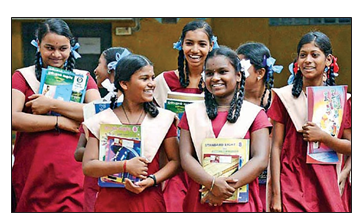
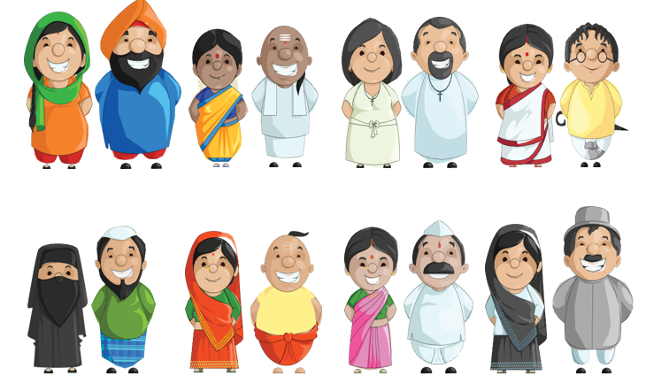
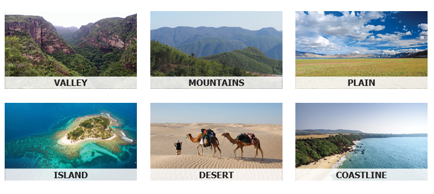
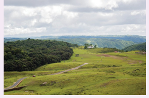
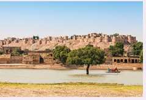
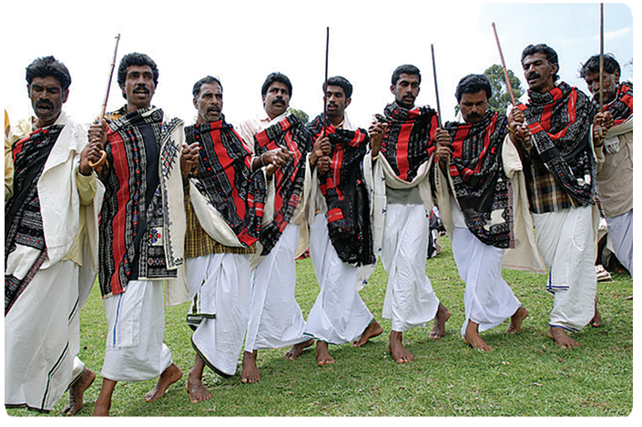
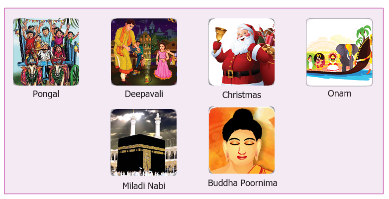
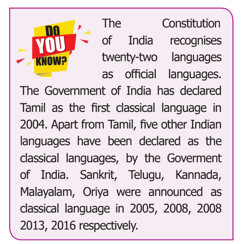
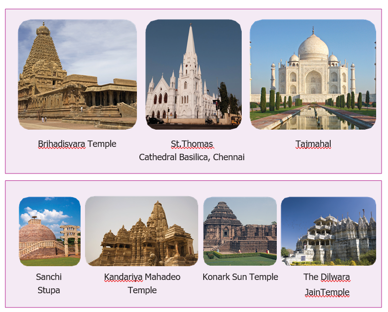
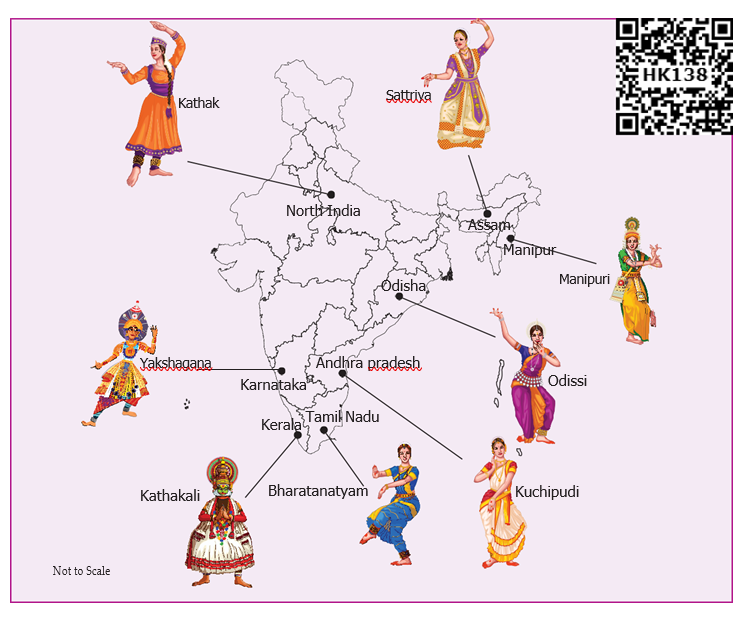

![the image shows ICT corner which is help to understanding diversity. lets do this activity to explore the indian culture, art, tradition and land forms. step 1: type the URL link given below in the browser or scan the QR code. you can also download the google art and culture mobile application from the given application URL. step 2: click the search button from the right top corner and type any Indian state name to ecplore their tradition and heritage. step 3: scroll down the page and view the famous architectures in 360degree view using explore in 360 degree option. step 4: search for any important landforms of india and explore them. URL for google art and culture https://www.google.com/culturalinstitute/beta/ URL for google art and culture mobile application https://play.google.com/store/details?id=com.google.android.apps.cultural&bl=en. it also contains QR code with reference no 7 3 G V 5](images/image-343.png)
Know the meaning of diversity
Understand the existence of diversity in India
Develop a healthy attitude towards others around you
Understand the differences in the belief systems of people
Know to accept and respect the unity in diversity
1. Understanding diversity
Take a look around your class. Do you see any of your classmates who looks similar? Look at the table.
From the below table, we understand that the three students are different from one another. This shows that people speak different languages, eat different kinds of food, celebrate their own festivals and practice a culture different from one another. Similarly, people who live in different parts of our country differ in their ways of life. These differences make us unique as Indians. We come from different backgrounds, belong to different cultures, worship in different ways, yet we live together. This is known as diversity.

|
Student 1 |
Student 2 |
Student 3 |
Mother tongue |
Tamil |
Malayalam |
Hindi |
Food |
Rice |
Puttu |
Chappathi |
Festival |
Pongal |
Onam |
Holi |
India is a home to a civilisation that is 5,000 years old. Different groups of people from different parts of the world were attracted towards India over the years because of its wealth. Some came for trade with the local people and others were keen on invading its territory. So diverse races of people migrated into India by land and sea routes over time. Thus, the Dravidians, Negroids, Aryans, Alpines and Mongoloids became part of the modern Indian race. Then, the people who migrated to India also moved to other parts of the country. This movement and migration of people is the reason for India’s rich diversity.
We will now study the diversity in India under the following broad headings: land forms and lifestyles diversity, social diversity, religious diversity, linguistic diversity and cultural diversity.

A continent is a very large area of land with various physical features such as mountains, plateaus, plains, rivers and seas and various types of weather patterns. India has all of them. India is known as a sub-continent. These features have an underlying influence upon the people who live in different landforms of the country.
Physical and climatic features determine the economic activities of a region. People living in the plains thrive on agriculture, while people in the coastal areas take to fishing for their livelihood. In mountainous regions, rearing of animals is undertaken. Hilly landscapes are supported by favorable climatic conditions for the cultivation of coffee and tea.
Diversity in landforms also impacts the flora and fauna of a region. The plant and animal wealth of a place depends upon the natural habitat and the climate that prevails in that region. Food, clothing, occupation and livelihood of the people is closely connected with the region’s natural surroundings and climate.
Landforms
The surface of Earth is covered with different types of landforms.

A community is a place where people live together with a common interest or heritage. Our community is made up of peasants, laborers, artisans, parents, teachers, students and many others. For a comfortable livelihood, communities depend on each other.
Do you know
Mawsynram located in Megalaya, is the land of highest rainfall.
Jaisalmer located in Rajasthan, is the land of lowest rainfall.


Families constitute the fundamental unit of a society. There are two types of families: joint families and nuclear families. Families live in a harmonious neighbourhood. Many of neighbourhoods collectively form a village and many of them group together in a city. The needs of people and the interdependence of communities for amenities such as water, food, electricity, education, housing and so on bring us together to live in harmony. Though we are diverse in our cultural practices, we are united and interdependent socially.
India is a secular country. It does not declare any religion as state religion. The freedom of religion is our fundamental right. India is the birth place of many religions and has become the home of many others. Hinduism, Islam, Christianity, Sikhism, Buddhism, Jainism and Zoroastrianism flourish in India.
India is a land of festivals, where people from different religions engage in many colourful celebrations in different parts of the country and co-exist harmoniously. The wide variety of festivals celebrated in India is a true manifestation of its rich culture and traditions. Festivals like Pongal, Deepavali, Holi, Vijayadashami, AyudhaPuja, Navaratri, Durga Puja, Dussehra, Ganesh Chaturthi, Bihu, Kumbamela, Onam, Miladi Nabi, Ramzan, Christmas, Buddha Poornima, Mahavir Jayanthi, Guru Nanak Jayanthi and Raksha Bandhan are some of the festivals that denote the cultural diversity of India.


According to census of India 2001, India has 122 major languages and 1599 other languages. Four major Indian language families are Indo-Aryan, Dravidian, Austroasiatic and Sino Tibetian. Tamil is the oldest Dravidian language.
Top Five languages spoken in India (as per 2011 Census)
Language |
Percentage of total population |
Hindi |
43.63% |
Bengali |
8.30% |
Telugu |
6.93% |
Marati |
7.09% |
Tamil |
5.89% |
Historically, the Portuguese, the Dutch, the British, the Danish and the French came to India for trade and their occupation of India or some parts of it has left behind a certain impact upon the culture and language of the people. Because the British ruled over the entire country for over three hundred years before independence in 1947, the English language gained prominence in India. In due course, English has emerged as an important language and a medium of instruction in schools and colleges. It is widely used in official communication and daily life.

The term ‘culture’ refers to customs and practices of people, their language, their dress code, cuisine, religion, social habits, music, art and architecture.
The culture of a group of people is reflected in their social behavior and interactions. The group identity fostered by social patterns is unique to a group.
Art and architecture are an integral part of every community. It develops as a part of culture and tradition of a community. Each of the 28 states and 9 Union territories of India has rich traditions and unique ways of artistic expression.

Do you Know
About 60 percent of the total epigraphical inscriptions found by the Archaeological Survey of India (A S I) are from Tamil Nadu, and most of these are in the Tamil script.
In ancient times, dance was considered as a way to celebrate, worship and also as a gesture of thanks giving and joy. Dances of India reflect its cultural richness.
Music and dance go hand in hand. There are several styles of music practiced in India. The Hindustani music, Karnatic music, Classical Tamil Music, Folk Music, Lavani, Ghazl are some of them. There are songs from various languages composed by blending these different forms of music.

Folk dances of India
State |
Popular dance |
Tamilnadu |
Karagattam, Oyillattam, Kummi, Therukoothu, Bommalattam, Puliattam, Kolattam, Thappattam |
Kerala |
Theyyam and Mohiniattam |
Punjab |
Bhangra |
Gujarat |
Garba and Dandia |
Rajastan |
Kalbelia and Ghoomer |
Uttar Predesh |
Ras Lila |
Uttarakhand |
Chholiya |
Assam |
Bihu |
Activity:
You have read about the diversity that exists in our country. Compare and contrast two states.
|
Tamilnadu |
Uttar Pradesh |
Dance |
|
|
Crops |
|
|
Food |
|
|
Language |
|
|
Architecture |
|
|
Though diversity is visible in every aspect of life in India, we are united by the spirit of patriotism. Symbols such as the National Flag and National Anthem remind us of our great nation and the need to stay united. Celebration of landmark events such as Independence Day, Republic Day and Gandhi Jayanthi every year bring us together and keep the spirit of one nation alive within us.
Do You Know
India is known for ‘unity in diversity’. This phrase was coined by Jawaharlal Nehru, the first Prime Minister of independent India, in his book Discovery of India.
India has a multi-cultural society. India evolved as a single nation through common beliefs, customs and cultural practices. The freedom struggle and the drafting of our Constitution stands as ample evidence to the spirit of unity of India.
Do You Know
V.A. Smith called India as an ‘Ethnological Museum’, as a great variety of racial types exist.
India is the land of unity in diversity.
Diversity is a state of being different from each other.
Landforms and climate haven impact on diversity.
Physical features and climatic conditions determine the economic activities of a region.
Diversity in landforms also impacts the flora and fauna of a region.
Linguistic, religious, social and cultural diversity exists in India.
India is a sub-continent with all the physical features of a continent.
According to census of India 2001, India has 122 major languages and 1599 other languages.
Culture refers to social behavior and practices of a particular society.
Classical and folk dances of India exhibit the rich cultural diversity in India.
1 |
Diversity |
a range of different people or things. |
2 |
Inter dependence |
the dependence of two or more people or things on |
3 |
Co-existence |
living in harmony and peace |
4 |
Linguistics |
Scientific study of language, analysis of language form, language meaning and language in context. |
1. India consists of dash States and dash Union territories.
a. 27, 9
b. 29, 7
c. 28, 7
d. 28, 8
2. India is known as a
a. Continent
b. Sub-continent
c. Island
d. None of these
3. Mawsynram, the land of highest rainfall is located in
a. Manipur
b. Sikkim
c. Nagaland
d. Meghalaya
4. Which one of the following religions is not practised in India
a. Sikhism
b. Islam
c. Zoroastrianism
d. Confucianism
5. Recognised official languages of India, as per 8th Schedule of Indian Constitution
a. 25
b. 23
c. 22
d. 26
6. Onam festival celebrated in
a. Kerala
b. Tamil Nadu
c. Punjab
d. Karnataka
7. Mohiniyattam is a classical dance of
a. Kerala
b. Tamil Nadu
c. Manipur
d. Karnataka
8. ‘Discovery of India’- a book was written by
a. Rajaji
b. V O C
c. Nethaji
d. Jawaharlal Nehru
9. The phrase ‘Unity in Diversity’ was coined by
a. Jawaharlal Nehru
b. Ambedkar
c. Mahathma Gandhi
d. Rajaji
10. V A. Smith called India as dash.
a. Great Democracy
b. Unique land of diversities
c. Ethnological Museum
d. Secular nation
1. Geographical features and climatic conditions determine the dash activities of a region.
2. Jaisalmer, the land of lowest rainfall is located in dash
3. Tamil was declared as classical language in the year dash
4. Bihu festival is celebratedin dash.
1. Negroids- Religion
2. Coastal areas - India
3. Zoroastrianism- Fishery
4. Unity in diversity- Indian race
1. Define diversity.
2. What are the types of diversity?
3. Why is India called a sub-continent?
4. Write the names of three major festivals celebrated in India.
5. List out some of the classical dances of India.
6. Why is India called the land of unity in diversity?
1. Explain: Linguistic diversity and cultural diversity.
2. “India is a land of diversity, yet we are all united”. Explain.
1. “The occupation of people depends on the landform of a place”. Give some examples.
2. Read about a state of your choice and make an album to show the culture and tradition of people who live in that state.
3. Collect the pictures to show the art and architecture of Tamil Nadu.
1. List out the various festivals celebrated in different states.
1. Suggest measures to bring unity in your school.
1. Wikipedia.org/wiki/unity_in_diversity
2. http://www.yourarticlelibrary.com
3. www.readmeindia.com
4. http://www.indiaculture.nic.in